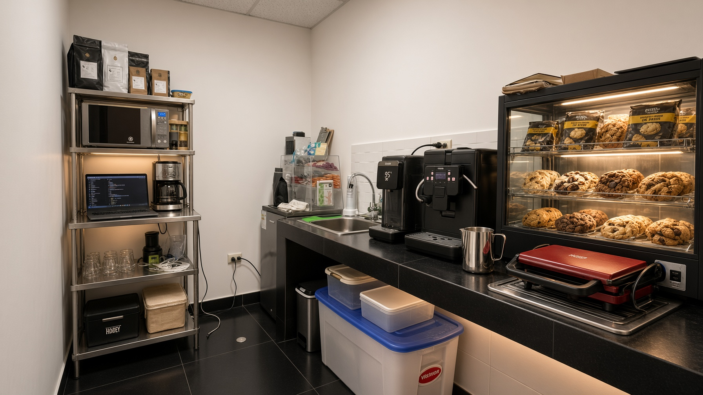
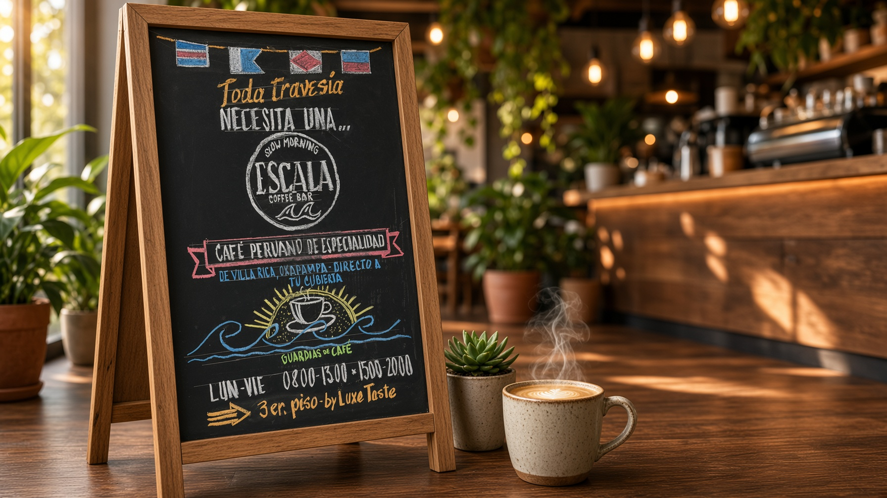

CAFÉ
Café americano
Una opción clásica para disfrutar el sabor de nuestro café.
S/ 7.00
CAFÉ PERUANO DE ESPECIALIDAD · VILLA RICA
Un buen café, algo rico para acompañar y un momento para disfrutar. Te esperamos en ESCALA.
Café de Villa Rica, Oxapampa · Centro Naval del Perú, San Borja


UN CAFÉ CON ORIGEN
En ESCALA disfrutamos compartir café peruano de especialidad, proveniente de Villa Rica, Oxapampa.
El café de especialidad se distingue por el cuidado de su cultivo, selección, tostado y preparación, buscando resaltar sus características y sabores.
Queremos que cada visita sea una pausa agradable, acompañada de bebidas y opciones para comer.
Conoce nuestra carta →LO QUE MÁS DISFRUTAN
CAFÉ
Una opción clásica para disfrutar el sabor de nuestro café.

PARA COMER
Una alternativa salada para acompañar tu bebida.

DULCES
Un acompañamiento dulce para disfrutar tu pausa.
PARA CADA MOMENTO
Conoce nuestras combinaciones para disfrutar de café y algo rico en cualquier momento del día.
Descubrir los packs
TE ESPERAMOS
Visítanos en el Centro Naval del Perú, en San Borja, Lima.